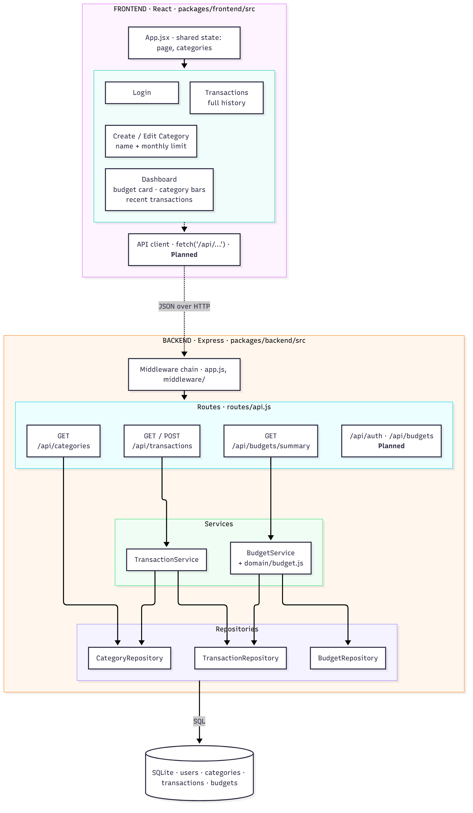
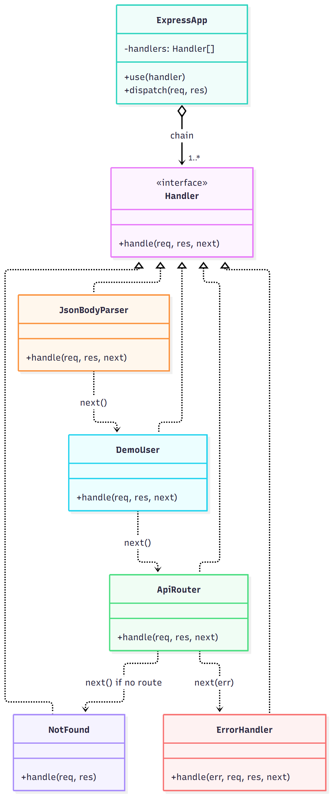

docs/uml/class-diagram.mmd.TE3: UML Class Diagram · TE4: Design and Architectural Patterns · CSC 3100 · Fall 2026 · Team OpenAnthropic
| Team | Shreev B. (Lead Developer) · Juan S. (Scrum Master & PM) · Juan F. (Project Tester) |
| Repository | https://github.com/shreev2703/finance-budget-tracker |
| Date | October 16, 2026 |
LedgerLogic is a web app that helps college students log income and expenses, see their monthly balance, and stay under per-category spending limits, with a warning at 80% of a limit. This document collects all of our design diagrams in one place: the TE3 UML class diagrams (Part 1) and the TE4 architecture, high-level design, and design-pattern diagrams (Part 2).
| Part | Contents |
|---|---|
| Part 1: TE3 | UML class diagram · Story → class traceability · Initial UML sketch |
| Part 2: TE4 | 1. Proposed architecture · 2. High-level design · 3. Design pattern (Chain of Responsibility) · 4. Design decisions and tradeoffs |
docs/uml/class-diagram.mmd.| Class | Responsibility | Stories |
|---|---|---|
| User | A registered student who owns all of their data, so records stay private. register(), login(). | US-01, US-02, US-07 |
| Category | A user-defined bucket such as "Groceries" or "Part-time Job". type says whether it holds income or expenses. | US-01, US-02, US-05, US-06, US-08 |
| Transaction | One income or expense entry with amount, date, category, and note. | US-01 – US-06 |
| Budget | A monthly spending limit for one expense category (period = YYYY-MM). Derives spent, remaining, percent used, near limit (≥ 80%), and over limit. | US-08, US-09 |
| CategoryType | Enumeration: INCOME or EXPENSE. | US-01, US-02 |
Design notes. Money is decimal in the model and stored as integer cents in the database. A user has at most one budget per category per month. Dashboard totals (US-04) and the spending-by-category chart (US-05) are computed from Transactions rather than stored, and filtering (US-06) is a query, not a class. A SavingsGoal class was considered and left out because no TE2 story requires it.
| Story | Summary | Classes | Attributes / methods |
|---|---|---|---|
| US-01 | Log an expense with amount, date, category, description | Transaction, Category, User | Transaction.amount, .date, .note, .type = EXPENSE; Transaction → Category |
| US-02 | Record paychecks and income sources | Transaction, Category, User | Transaction.type = INCOME; income categories |
| US-03 | Edit or delete a past transaction | Transaction | Transaction.id; update/delete |
| US-04 | Dashboard: income, expenses, remaining balance | Transaction | Derived: sum of amount by type for the month |
| US-05 | Spending-by-category chart | Transaction, Category | Derived: expense amount grouped by Category |
| US-06 | Filter history by category and date range | Transaction, Category | Query on Transaction.date and Category |
| US-07 | Create an account and log in | User | User.email, .passwordHash, register(), login() |
| US-08 | Monthly spending limit per category | Budget, Category | Budget.limitAmount, .period; remaining(), isOverLimit() |
| US-09 | Warning at 80% of a category limit | Budget | percentUsed(), isNearLimit() |
Each item below is labeled IMPLEMENTED (in the code on main) or PLANNED.
The system is split into three tiers: a React client running in the browser, a Node.js/Express REST API server, and a relational database. Inside the server, the code is organized into strict layers. Each layer only calls the layer directly below it:
React client → Express middleware → routes (controllers) → services → repositories → SQLite / MySQL
Why it fits LedgerLogic.
domain/budget.js.backend/test/api.test.js), because the database is passed into the app rather than hard-coded.Communication direction: the client always starts the exchange (HTTP request); the server never pushes to the client. Within the server, calls only go downward (routes → services → repositories → database), and results return up the same path.
External systems: none. Bank linking, automatic transaction import, and payments are explicitly out of scope in our SRS, and we build login ourselves (see Decision 4), so the app has no third-party services.

| Layer | Responsibility | Where it lives |
|---|---|---|
| Presentation | Pages and components the student interacts with | packages/frontend/src/ |
| Middleware | Parses JSON, identifies the user, turns errors into consistent JSON | backend/src/app.js, middleware/ |
| Routes | Maps HTTP method + URL to a service call; picks the status code | routes/api.js |
| Services | Validation and business rules (amounts, dates, category type, 80% warning) | services/, domain/budget.js |
| Repositories | The only code that contains SQL | repositories/ |
| Data | Users, categories, transactions, budgets | db/schema.sql |

The React prototype (built with Vite) has these main pages: Login, Dashboard (monthly budget card, category allocation bars with amount remaining, recent transactions), Transactions (full history), and Create / Edit Category (name + monthly limit). App.jsx holds the shared state (the current page and the list of categories) and passes it to each page as props. Juan F.'s component plan (frontend-architecture.md) sets the target structure: App → DashboardPage → BudgetSummary, TransactionList, AddTransactionForm, with DashboardPage owning the shared data and refreshing it after a transaction is added.
The current prototype uses sample data in React state. Planned: a small API client module (fetch('/api/...')) that loads real data from the backend, plus a Vite proxy that forwards /api to port 3001.
| Route | Purpose | Service → repositories |
|---|---|---|
GET /api/transactions | List transactions, newest first (US-01, US-02) | TransactionService → TransactionRepository |
POST /api/transactions | Validate and save an income or expense (US-01, US-02) | TransactionService → Transaction + Category repositories |
GET /api/budgets/summary | Monthly totals and per-category spent / remaining / status (US-04, US-08, US-09) | BudgetService → Transaction + Budget repositories |
GET /api/categories | Categories for the form (US-01, US-02) | CategoryRepository |
/api/auth/*, /api/budgets, edit/delete/filter PLANNED | Login (US-07), set limits (US-08), edit/delete (US-03), filter (US-06) | New AuthService; existing services |
POST /api/transactions with { amount, type, categoryId, date, note }.TransactionService validates every field, checks that the category belongs to the user and matches the type, and converts dollars to cents.TransactionRepository inserts the row; the API returns 201 with the saved transaction (or 400 with a list of problems).GET /api/budgets/summary, so the balance and category bars update. A category at or above 80% of its limit is flagged warning, and one above 100% is flagged over.Category: Gang of Four, behavioral pattern.
Every API request needs the same cross-cutting steps before and after the actual work: parse the JSON body, figure out which user is calling, find the matching route, answer with a 404 if nothing matched, and convert any thrown error into a clean JSON error with the right status code. If every route did these steps itself, the same code would be copied into every endpoint, and changing one step (for example, replacing our temporary demo user with real login) would mean editing every route.
Chain of Responsibility passes a request along a chain of handlers. Each handler either handles the request or passes it to the next one. Express middleware is this pattern. Every handler has the same interface, (req, res, next), and calls next() to pass the request on, or next(err) to jump to the error handler. We build the chain once in backend/src/app.js:
// packages/backend/src/app.js (lines 17–32)
const app = express();
app.use(express.json()); // 1. parse the JSON body → next()
app.use('/api', demoUser(db)); // 2. attach req.userId → next()
app.use('/api', apiRouter({ ... })); // 3. run the matching route, or → next()
app.use(notFound); // 4. no route matched → 404 JSON
app.use(errorHandler); // 5. any next(err)/throw → 4xx/500 JSON// packages/backend/src/middleware/demoUser.js
export function demoUser(db) {
const findUser = db.prepare('SELECT id FROM users WHERE email = ?');
return (req, res, next) => {
req.userId = findUser.get(DEMO_USER_EMAIL)?.id; // handle my part...
next(); // ...then pass it on
};
}| GoF role | Our code | What it does |
|---|---|---|
| Handler (interface) | (req, res, next) function signature | The common interface every link implements |
| Concrete handlers | express.json(), demoUser, apiRouter, notFound, errorHandler | Each does one job, then calls next() or ends the request |
| Client / chain builder | createApp() in app.js | Puts the handlers in order |
| Successor link | next() / next(err) | Passes the request on, or skips straight to the error handler |

handle(req, res, next) interface.demoUser with an auth handler that checks a session or token. No route or service changes.errorHandler. The frontend always receives { error, details }, so it can show validation messages the same way on every form.| Options considered | (a) Write SQL and validation directly inside each route handler. (b) Routes → services → repositories. |
|---|---|
| Selected | (b) Routes only translate HTTP; services hold validation and business rules; repositories hold all SQL. |
| Why it fits now | It costs a few more files, but rules like "the category must match the transaction type" and "warn at 80%" live in one place. The SQL can change (SQLite → MySQL) without touching the routes. It also lets us test the full API automatically, which matters because our Project Tester role is responsible for verifying each feature. |
| Options considered | (a) MySQL server from day one (as listed in the SRS template). (b) MongoDB. (c) SQLite through Node's built-in node:sqlite, with a schema written to map 1:1 to MySQL. |
|---|---|
| Selected | (c) SQLite for development and demos. |
| Why it fits now | No database server has to be installed on any teammate's laptop or the presentation machine, so npm install then npm run dev just works. The data is relational (users → categories → transactions/budgets), so a SQL database suits it better than MongoDB. Because all SQL sits in the repository layer, moving to MySQL later is contained to repositories/ and db/. Tradeoff: SQLite is not built for many simultaneous writers, which is fine at our scale. |
| Options considered | (a) JavaScript floating-point numbers. (b) A DECIMAL column. (c) Integer cents (amount_cents), converted at the API edge. |
|---|---|
| Selected | (c) Integer cents. The API accepts dollars in requests and returns …Cents fields. |
| Why it fits now | Floating-point math gives answers like 0.1 + 0.2 = 0.30000000000000004, which would make totals and the 80% threshold slightly wrong. Integers are exact in both SQLite and JavaScript. Tradeoff: the frontend has to divide by 100 when displaying amounts. |
| Options considered | (a) A hosted auth service (Supabase Auth, Firebase Auth). (b) Our own email + password login with bcrypt hashing and a session/JWT middleware. (c) Build auth before any other feature. |
|---|---|
| Selected | (b), scheduled after the core budgeting flow. Until then, a demoUser middleware acts as one seeded student. |
| Why it fits now | Our SRS promises privacy and no third-party accounts, and it already requires bcrypt hashing. Our users table (email, password_hash) is ready for it. Building the budgeting features first let us demo real value sooner. Thanks to the Chain of Responsibility design, adding login means swapping one handler. |
| Options considered | (a) A global store such as Redux. (b) Keep shared data in one parent component (App / DashboardPage) and pass it down as props. |
|---|---|
| Selected | (b), per Juan F.'s frontend architecture plan. |
| Why it fits now | The app has a handful of pages sharing two pieces of data (categories and transactions), so a store library would add setup without benefit. When the parent's state changes after a save, React re-renders every component that uses it, so the list and the budget bars stay in sync automatically. |